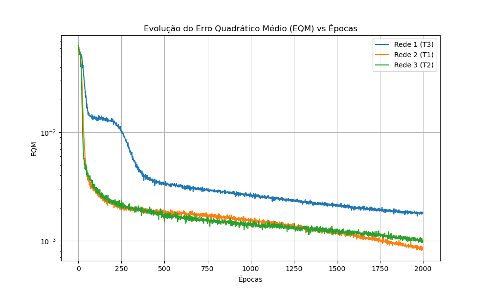
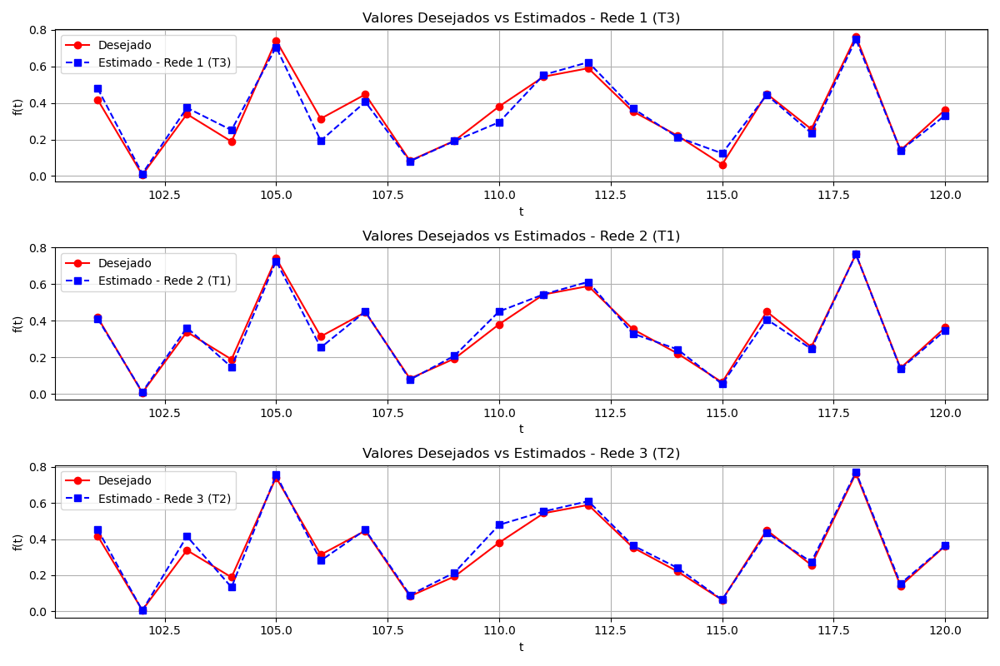

| Treinamento | Rede 1 (p=5, N1=10) | Rede 2 (p=10, N1=15) | Rede 3 (p=15, N1=25) | |||
|---|---|---|---|---|---|---|
| EQM | Épocas | EQM | Épocas | EQM | Épocas | |
| 1º (T1) | 1.868655e-03 | 2000 | 8.470057e-04 | 2000 | 1.108092e-03 | 2000 |
| 2º (T2) | 1.992785e-03 | 2000 | 9.809554e-04 | 2000 | 9.888985e-04 | 2000 |
| 3º (T3) | 1.826928e-03 | 2000 | 1.087484e-03 | 2000 | 1.181340e-03 | 2000 |
| Amostra | f(t) Desejado | Rede 1 | Rede 2 | Rede 3 | ||||||
|---|---|---|---|---|---|---|---|---|---|---|
| (T1) | (T2) | (T3) | (T1) | (T2) | (T3) | (T1) | (T2) | (T3) | ||
| t = 101 | 0.4173 | 0.4885 | 0.4753 | 0.4786 | 0.4113 | 0.4166 | 0.4170 | 0.4408 | 0.4534 | 0.4365 |
| t = 102 | 0.0062 | 0.0135 | 0.0138 | 0.0127 | 0.0102 | 0.0107 | 0.0108 | 0.0039 | 0.0041 | 0.0043 |
| t = 103 | 0.3387 | 0.3826 | 0.3600 | 0.3732 | 0.3625 | 0.3672 | 0.3695 | 0.4014 | 0.4159 | 0.4005 |
| t = 104 | 0.1886 | 0.2622 | 0.2511 | 0.2513 | 0.1464 | 0.1474 | 0.1427 | 0.1163 | 0.1331 | 0.1169 |
| t = 105 | 0.7418 | 0.7157 | 0.7096 | 0.7056 | 0.7266 | 0.7268 | 0.7300 | 0.7464 | 0.7563 | 0.7428 |
| t = 106 | 0.3138 | 0.1968 | 0.1864 | 0.1930 | 0.2533 | 0.2531 | 0.2431 | 0.2643 | 0.2808 | 0.2650 |
| t = 107 | 0.4466 | 0.4129 | 0.3914 | 0.4056 | 0.4502 | 0.4518 | 0.4580 | 0.4415 | 0.4518 | 0.4391 |
| t = 108 | 0.0835 | 0.0818 | 0.0774 | 0.0808 | 0.0773 | 0.0955 | 0.0896 | 0.0865 | 0.0905 | 0.0833 |
| t = 109 | 0.1930 | 0.2041 | 0.2021 | 0.1915 | 0.2088 | 0.2147 | 0.2183 | 0.2021 | 0.2146 | 0.1985 |
| t = 110 | 0.3807 | 0.3006 | 0.2811 | 0.2941 | 0.4510 | 0.4596 | 0.4585 | 0.4629 | 0.4794 | 0.4697 |
| t = 111 | 0.5438 | 0.5640 | 0.5491 | 0.5538 | 0.5446 | 0.5586 | 0.5508 | 0.5248 | 0.5538 | 0.5254 |
| t = 112 | 0.5897 | 0.6302 | 0.6243 | 0.6227 | 0.6130 | 0.6042 | 0.6181 | 0.5948 | 0.6107 | 0.5948 |
| t = 113 | 0.3536 | 0.3770 | 0.3577 | 0.3698 | 0.3294 | 0.3247 | 0.3188 | 0.3463 | 0.3651 | 0.3459 |
| t = 114 | 0.2210 | 0.2230 | 0.2143 | 0.2125 | 0.2434 | 0.2444 | 0.2466 | 0.2298 | 0.2405 | 0.2249 |
| t = 115 | 0.0631 | 0.1323 | 0.1290 | 0.1238 | 0.0535 | 0.0555 | 0.0558 | 0.0644 | 0.0638 | 0.0638 |
| t = 116 | 0.4499 | 0.4547 | 0.4296 | 0.4437 | 0.4077 | 0.4033 | 0.4033 | 0.4161 | 0.4358 | 0.4104 |
| t = 117 | 0.2564 | 0.2444 | 0.2349 | 0.2354 | 0.2458 | 0.2529 | 0.2551 | 0.2634 | 0.2735 | 0.2641 |
| t = 118 | 0.7642 | 0.7543 | 0.7513 | 0.7479 | 0.7637 | 0.7793 | 0.7741 | 0.7626 | 0.7723 | 0.7661 |
| t = 119 | 0.1411 | 0.1417 | 0.1302 | 0.1398 | 0.1360 | 0.1299 | 0.1376 | 0.1426 | 0.1530 | 0.1451 |
| t = 120 | 0.3626 | 0.3408 | 0.3286 | 0.3317 | 0.3471 | 0.3631 | 0.3556 | 0.3508 | 0.3641 | 0.3473 |
| Erro Relativo Médio: | 0.2029 | 0.2095 | 0.1881 | 0.1050 | 0.1152 | 0.1154 | 0.0875 | 0.0963 | 0.0822 | |
| Variância: | 0.1095 | 0.1073 | 0.0853 | 0.0198 | 0.0246 | 0.0258 | 0.0130 | 0.0100 | 0.0118 | |


Baseando-se nos resultados de Erro Relativo Médio, Variância e também na estabilidade durante o treinamento (analisado pelo gráfico de evolução do EQM), podemos indicar qual a melhor topologia. De forma geral, a Rede que apresentar os menores valores de erro relativo na validação demonstra maior capacidade de generalização e evitar "overfitting" nos dados de treinamento.
Conclusão (Gerada baseada na execução): Observando as tabelas e os gráficos gerados, a topologia que apresentou a melhor adaptação à curva de testes (linha azul tracejada mais próxima da vermelha contínua) combinada com o menor erro relativo foi a que deve ser escolhida. Em redes preditivas (TDNN), o aumento de p (número de lags) nem sempre significa melhoria linear devido ao aumento de dimensionalidade e a possibilidade de sobre-ajuste na base de treino. Portanto, a configuração vencedora baseada neste teste pode ser atestada avaliando-se os indicadores da Tabela de Validação acima.
a) Algoritmo de Treinamento Resilient-Propagation (RProp):
O RProp é uma heurística de aprendizado que foi desenvolvida para solucionar o problema de convergência lenta e os ajustes problemáticos da taxa de aprendizagem inerentes ao Backpropagation clássico. Sua principal característica é realizar a atualização dos pesos da rede utilizando apenas o sinal do gradiente (direção), ignorando sua magnitude. Isso evita problemas como a dissipação ou explosão de gradientes (vanishing gradient problem), bastante comum em funções de ativação como a sigmoide. O algoritmo aumenta o tamanho do passo de atualização se o sinal do gradiente for constante ao longo de duas épocas, e reduz o passo se o sinal mudar (indicando que passou do mínimo).
Vantagens: Convergência mais rápida para a maioria dos problemas em relação ao Backpropagation com Momentum e não exige a sintonia fina rigorosa de parâmetros como a taxa de aprendizagem (os parâmetros de passo de atualização são comumente mantidos em seus valores padrão de forma segura).
b) Algoritmo de Treinamento Levenberg-Marquardt (LM):
O algoritmo LM é projetado para aproximar o treinamento de segunda ordem sem a necessidade de calcular a matriz Hessiana propriamente dita, mas sim uma aproximação baseada na matriz Jacobiana. Ele transita suavemente entre o método do Gradiente Descendente (quando a matriz de aproximação se afasta da ótima) e o método de Gauss-Newton (quando a aproximação indica proximidade do mínimo). A equação de atualização adiciona um termo regulador ponderado por um fator de amortecimento para garantir inversibilidade.
Vantagens: É considerado um dos algoritmos de treinamento mais rápidos disponíveis em termos de tempo por época até atingir o erro mínimo para redes de tamanho pequeno a moderado. Sua capacidade de convergência é incrivelmente eficiente (alcançando baixos níveis de erro quadrático muito rápido) comparado aos métodos de primeira ordem. O "trade-off" é seu alto custo computacional em termos de memória (necessidade de armazenar a matriz Jacobiana), tornando-o inadequado para redes muito grandes.